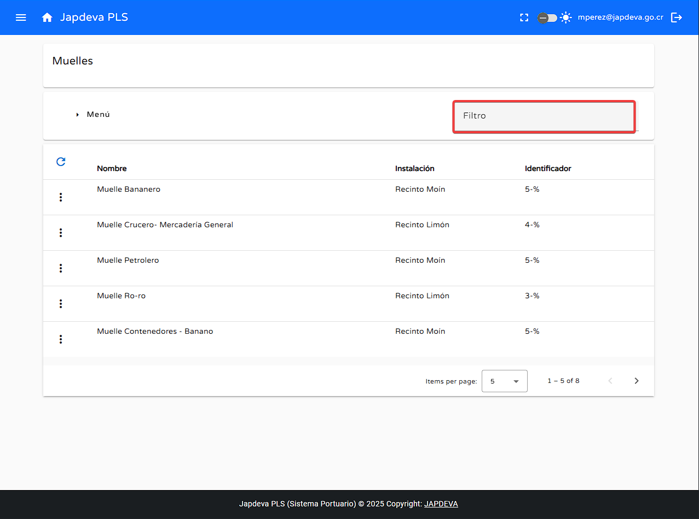

Bienvenido a la guía de usuario para la pantalla Muelle del sistema PLS. Esta guía está
diseñada para ayudarte a utilizar y comprender de forma sencilla y directa las funcionalidades que ofrece
esta pantalla.
1. Introducción
La pantalla Muelle se encuentra ubicada dentro del submenú Almacenamiento de
Datos y ofrece una visualización general de los muelles existentes y registrados
en el sistema. Además de brindar un kit con diversas funciones de creación edición, eliminación y búsqueda.
Consejo: Esta guía está diseñada para ser leída en orden, pero puedes saltar a las
secciones que necesites usando el menú de contenido.
2. Funciones principales
1
Crear un nuevo muelle
Para realizar una inserción de un nuevo muelle se debe de hacer lo siguiente:
Dentro de la pantalla Muelle nos posicionamos sobre el botón Menú
situado en la parte superior izquierda de la pantalla.
Hacemos clic sobre el botón anteriormente mencionado y se nos mostrará la opción de Registro
nuevo.
Al dar clic sobre el opción anterior se desplegará una vista para el Registro de
Muelle donde se podrá realizar la inserción de los datos necesarios para la creación
de un nuevo muelle.
Con lo anterior ya visto comencemos con la inserción de los datos necesarios para la creación de un
nuevo muelle.
Creación de un nuevo muelle
El primer campo dentro de esta vista es la selección de la Instalación Portuaria a la que
pertenece el muelle a registrar.
Una vez seleccionada la instalación portuaria el siguiente campo a rellenar es el Nombre del
muelle.
Por último se debe de rellenar el campo de Identificador del muelle.
Una vez rellenados todos los campos se hace clic en el botón Guardar para guardar los datos del nuevo muelle.
En caso de que se desee cancelar el proceso se puede dar clic en el botón Cancelar para abortar
la operación.
2
Función búsqueda por filtro
Para realizar una búsqueda mediante filtro que sea satisfactoria se debe de hacer lo siguiente:
Nos posicionamos dentro del espacio en blanco de filtro.

Al estar dentro del espacio en blanco lo rellenamos con los datos deseados para realizar la búsqueda
en la tabla proyectada en el sistema.
3
Función refrescar información
Para realizar de manera efectiva la actualización de la información en tiempo real se debe de hacer lo
siguiente:
Ubicamos nuestro cursor sobre el botón de refrescar y presionamos sobre él.
Al momento de dar clic sobre el botón se realizará un refresco de información en pantalla por la más
reciente ingresada en el sistema.
4
Función editar muelle
Para realizar la edición de un muelle ya registrado se debe de hacer lo siguiente:
Ubicamos el cursor sobre el botón Opciones que se encuentra ubicado de lado izquierdo de la
tabla proyectada en pantalla.
Al estar sobre el botón Opciones se desplegará un menú con dos opciones:
Editar y Eliminar.
Al dar clic en la opción Editar se desplegará una ventana de edición para modificar
los datos del muelle seleccionado.
5
Función eliminar muelle
Para eliminar un muelle ya existente se debe de hacer lo siguiente:
Ubicamos el cursor sobre la opción Eliminar.
Al dar clic en esta opción se desplegará una ventana de confirmación donde se podrá seleccionar si
eliminar definitivamente el muelle seleccionado o cancelar la operación.
6
Visualización de información en pantalla Muelle
Para tener una visión general más clara de la información proyectada en la pantalla Muelle se
explicarán los datos en la tabla presente en la pantalla.
Nombre: El nombre general del muelle.
Instalación: Instalación portuaria donde se encuentra localizado el muelle en
cuestión.
Identificador: Número de identificación del muelle.